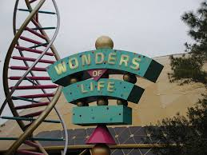

WONDERS OF OUR LIFE

HELLO EVERYONE!!!!!!!!!!. TOH KAISE HAI AAP LOG. YES GUYS IM BACK AND YOU ARE AT YOUR FINAL STAGE TO
KILL YOUR SADNESS AND RELIVE YOURSELF WITH HAPPINESS.
THANOS WIPED 50% OF THE POPULATION WITH JUST A SNAP. AND YOU CAN ALSO BE LIKE HIM. ITS LIKE A PIECE OF CAKE. JUST SMILE
AND LAUGH AND INSTEAD OF 50%, 100% OF YOUR SADNESS WILL BE WIPED OUT. JUST LAUGH AND YOU WILL GET TO KNOW THE
WONDERS OF YOUR LIFE AND THERE WILL BE NOTHING THAT YOU CANNOT ACHIEVE. HAVE CONFIDENCE AND HAVE FAITH IN YOURSELF
AND THEN THE WHOLE WORLD WILL BE YOURS. I HOPE YOU HAVE KILLED YOUR SADNESS STRESS DEPRESSION TENSION.